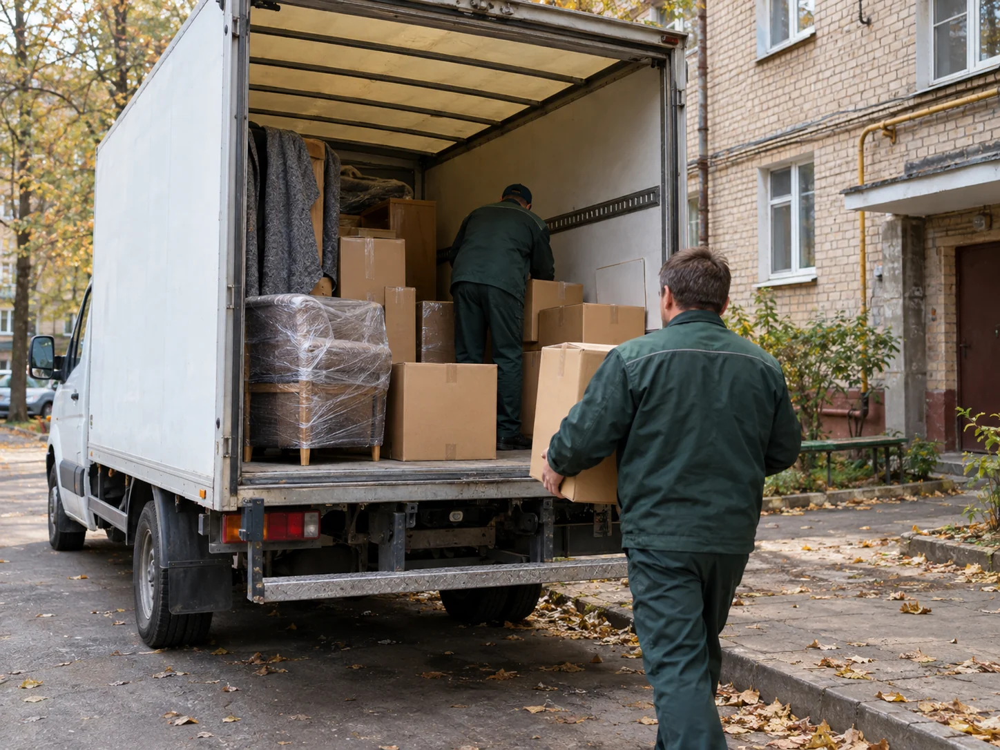
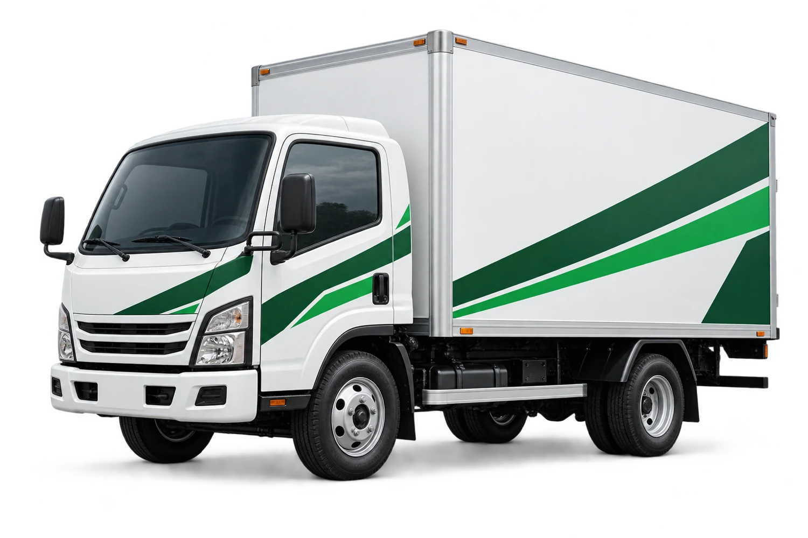
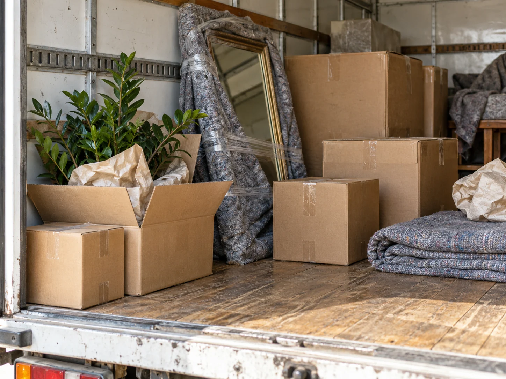

До 1,5 тонн
Подача + 2 ч, до 30 км по городу
Городской заказ, от— ₽
Доп. час, от—
Межгород, от—
По городу и между городами
Переезжаете, отправляете товар или везёте новую мебель? Подберём машину под ваш груз и заранее посчитаем дорогу.
Рассчитать перевозкуПосмотреть транспортЧто перевозим
Возим вещи, мебель, технику и товары.
Для разовой доставки
и регулярных поставок.

Для себяМебель, техника и те самые коробки, которые никак не заканчиваются. Погрузку и упаковку можно включить в расчёт.
Разовая доставка или регулярная поставка. Уточните массу, размеры и условия погрузки — начнём с подходящей машины.
Подберём по размеру
В калькуляторе транспорт подбирается
по массе и объёму. Здесь можно
посмотреть категории отдельно.
Мебель, бытовая техника, коробки и небольшие партии товаров.

Расчётные категории: до 16, 35 и 82 м³ соответственно. Конкретный кузов, габариты вещей и возможность погрузки нужно уточнить до заказа.
О стоимости
Ниже — стартовые ориентиры.
Для вашего адреса и груза
калькулятор посчитает отдельно.
Подача + 2 ч, до 30 км по городу
Подача + 3 ч, до 30 км по городу
Подача + 4 ч, до 30 км по городу
Итог зависит от пробега, времени, груза и услуг. Для межгорода в прайс включены 2 часа погрузки и разгрузки. Платные дороги и дополнительные работы указываются отдельно.
Дата не принципиальна? Отметьте гибкую дату в дополнительных параметрах. Калькулятор проверит, доступна ли скидка до 5%.

Как заказать перевозку
Два адреса и список груза. Если есть тяжёлые или крупные вещи, сразу укажите их размеры.
Километраж, подходящая машина и стоимость — в одной форме. Готовую заявку можно скачать или скопировать.
Перед заказом проверьте точные адреса, подъезд для машины, время и окончательную цену с перевозчиком.
Ваш маршрут
От вас — адреса и описание груза.
Километраж, топливо и машину
подберём в одном расчёте.
Не знаете точный вес? Опишите вещи и количество. Для типовых грузов покажем примерную массу и объём.
Расчёт предварительный. Габариты груза, условия погрузки и подачу машины нужно согласовать отдельно.
Часто спрашивают
Несколько вещей, которые
лучше уточнить заранее.
Из пробега, времени работы, подачи машины и выбранных услуг. В расчёте учитываются топливо и расчётный обратный пробег. Итоговую стоимость согласуют после проверки адресов, груза и условий погрузки.
Перечислите предметы и количество, например: «1 диван, 1 холодильник, 10 коробок». Калькулятор оценит диапазон массы и объёма. Если предмет не распознан, уточните описание или укажите общий вес в дополнительных параметрах.
Да, в дополнительных параметрах расчёта. Для грузчиков укажите количество людей и время работы. Этаж, лифт, тяжёлые вещи, дополнительные материалы и сложную разборку мебели обсудите отдельно.
Километраж строится по автомобильным дорогам с помощью OSRM и OpenStreetMap. Это легковой профиль: высоту, массу по осям, ограничения, паромы и фактический проезд конкретной машины проверяет перевозчик.
Сейчас сайт помогает подготовить расчёт и собрать данные. Готовую заявку можно скопировать или скачать и передать выбранному перевозчику. Заказ считается согласованным после подтверждения условий.